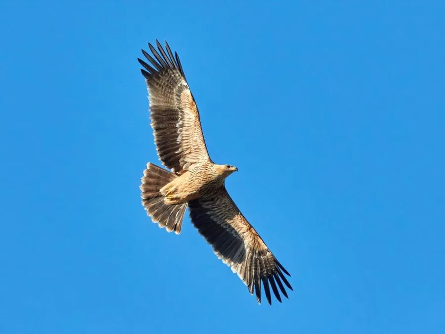

鸟类 · 动物界
白肩雕 Aquila heliaca

欧亚大陆的珍稀猛禽，成鸟肩部有白色斑块、枕部淡黄色，栖息于草原和疏林，因栖息地丧失和偷猎被列为易危。
- 分类
- 门脊索动物门纲鸟纲目鹰形目科鹰科属雕属
- 栖息环境
- 草原、半荒漠、疏林与湿地边缘
- 地理分布
- 欧洲东南部、中亚、蒙古和中国西北部，冬季南迁至中东、南亚和非洲东北部
- 保护级别
- IUCN 易危（VU）；中国国家一级保护动物
物种志
白肩雕体长 72–84 厘米，翼展 180–215 厘米，体重 2.5–4.5 千克，雌鸟明显大于雄鸟。成鸟全身深褐色，肩部有醒目的白色斑块，头顶和枕部呈淡黄褐色，尾羽有横斑；幼鸟羽色较浅，带纵纹。
白肩雕繁殖于欧洲东南部、中亚、蒙古和中国西北部，冬季南迁到中东、南亚和非洲东北部。它栖息在草原、半荒漠和疏林地带，常在水域附近的高树或电塔上筑巢，以黄鼠、野兔、鸟类和腐肉为食。雌鸟每窝产 2–3 枚卵，孵化约 43 天，雏鸟约 60 天后离巢。由于栖息地开发、电线触电和盗猎，白肩雕全球种群数量较少，被列为易危，在中国属于国家一级保护动物。
形态与习性
- 食性黄鼠、野兔、鸟类与腐肉
- 体长72–84 cm
- 翼展180–215 cm
- 体重2.5–4.5 kg
- 繁殖每窝 2–3 枚卵，孵化约 43 天
- 寿命野外约 20 年
趣味知识
- 白肩雕成鸟肩部有白色斑块，头顶和枕部呈淡黄色。
- 它常在水域附近的高树或电塔上筑巢。
- 全球白肩雕数量稀少，在中国属于国家一级保护动物。